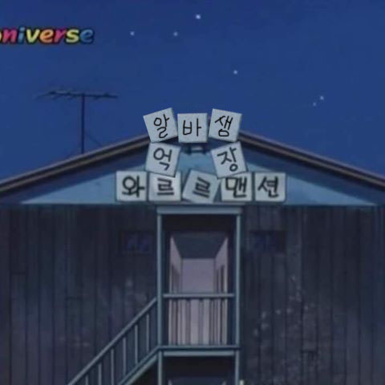

1. 물은 셀프인 곳에서 세번넘게 물떠달라 하기
2. 5분에 한번씩 포크나 젓가락 떨구기
3. 올때마다 말해줬는데 이거 없냐고 또 물어보기
4. 서로 자기가 계산한다고 뒤에 사람 있는데 계속 바꾸기
5. 바꿔서 계산한걸 환불하고 이걸로 해달라하기
6. 맛없다고 뭐라하고 싹싹 다먹고가기
7. 화장실 키 가져오라 했는데 안에다 놓고 문 잠그기
8. 마감시간에 금방먹고 간다면서 두시간넘게 먹기
9. 생맥주 3잔 하나씩 연속으로 시키기
10. 샐러드 리필 오백만번 하기
11. 눈 마주칠때까지 말도 안하고 눈치게임하기
12. 카운터 코앞 테이블에서 계산하라고 카드던지기
어디선가 무너지는 소리가 들린다면 그건 아마 제 억장일 걸요